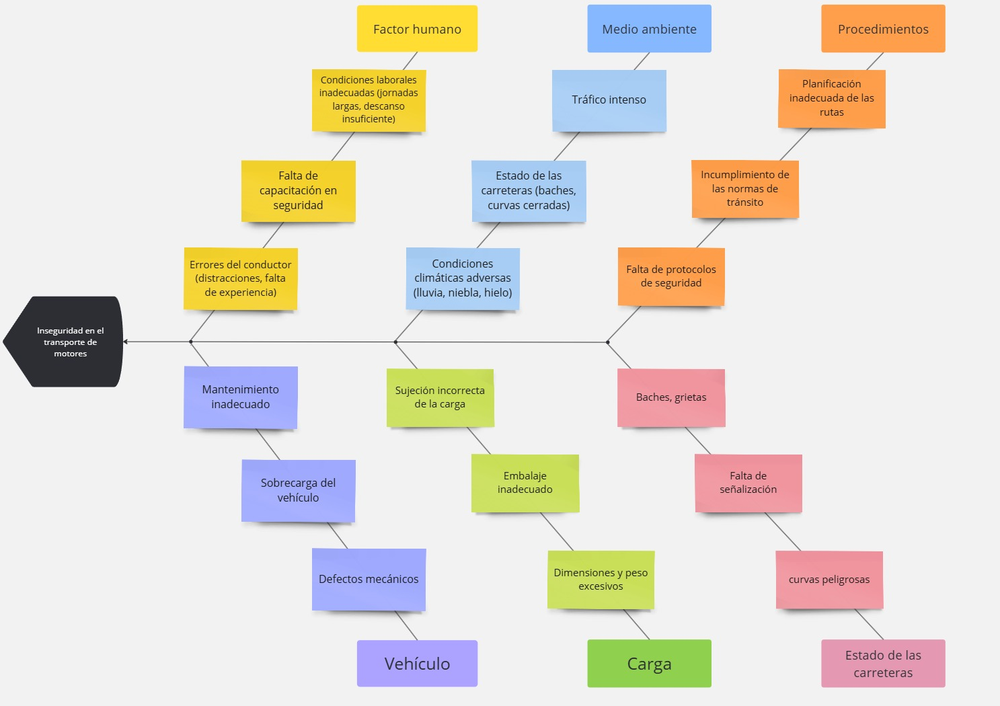

- Flexibilidad: Adaptarse a diferentes tamaños y tipos de motores, así como a cambios en los volúmenes de producción.
- Eficiencia: Reducir los tiempos de ciclo, minimizar el manejo manual y optimizar el uso del espacio.
- Seguridad: Garantizar la seguridad de los trabajadores y de los productos durante el transporte y manejo de los motores.
- Calidad: Preservar la calidad de los motores durante el transporte, evitando daños o contaminaciones.
- Escalabilidad: Poder expandir o reducir el sistema de acuerdo con las necesidades cambiantes de la producción.
- Reducción de costos: Minimizar los costos operativos a través de la automatización y la optimización de rutas.
- Diseño modular: Crear un sistema compuesto por módulos independientes que puedan ser configurados y reconfigurados fácilmente.
- Automatización: Implementar sistemas de control automatizados para reducir la intervención manual y aumentar la precisión.
- Integración con otros sistemas: Conectar el sistema de transporte con otros sistemas de producción, como líneas de ensamblaje y almacenes.
- Monitoreo y seguimiento: Implementar sistemas de seguimiento en tiempo real para conocer la ubicación y el estado de los motores en todo momento.
- Ergonomía: Diseñar estaciones de trabajo e interfaces de usuario que sean ergonómicas y fáciles de usar.
- Sustentabilidad: Utilizar materiales y tecnologías que minimicen el impacto ambiental.
- Resolución 2400 de 1979 (Normas de Seguridad Industrial)
Definición: Establece normas generales de seguridad e higiene en el trabajo, que incluyen directrices para el manejo seguro de cargas pesadas.
Importancia en el proyecto: Es esencial para garantizar que el transporte de motores en entornos industriales cumpla con los estándares de seguridad, protegiendo a los operarios y minimizando riesgos de accidentes durante la manipulación de cargas.
Fuente: Resolución 2400 de 1979: Una medida histórica para la protección del medio ambiente | Interseguridad
- Resolución 1409 de 2012 (Trabajo en alturas)
Definición: Regula las condiciones de seguridad para trabajos en alturas, incluyendo la manipulación y transporte de cargas en zonas elevadas.
Importancia en el proyecto: Si el sistema de transporte modular implica la movilización de motores en niveles altos, esta normativa garantiza que se sigan procedimientos seguros para prevenir caídas o accidentes.
Fuente: Resolución 1409 de 2012 (minsalud.gov.co)
- NTC 2076
Definición: Regula las buenas prácticas en el diseño, fabricación, uso y mantenimiento de maquinaria y equipos industriales.
Importancia en el proyecto: Asegura que el diseño del sistema de transporte modular cumpla con los requisitos de seguridad y rendimiento para operar de manera eficiente y evitar fallos.
Fuente:Recubrimiento de zinc por inmersión en caliente para elementos en hierro y acero. (icontec.org)
- NTC 2885
Definición: Define los requisitos de seguridad en máquinas y equipos industriales, protegiendo a los trabajadores de riesgos derivados de su uso.
Importancia en el proyecto: Esta normativa es clave para proteger a los operarios que estarán involucrados en la operación del sistema de transporte modular, garantizando que se minimicen riesgos de accidentes o lesiones.
Fuente:NORMA TÉCNICA COLOMBIANA 2885 (1library.co)
- Decreto 1609 de 2002 (Transporte de mercancías peligrosas)
Definición: Regula el transporte de mercancías peligrosas por carretera en Colombia.
Importancia en el proyecto: Si los motores transportados contienen materiales peligrosos, como aceites o sustancias químicas, es crucial cumplir con esta normativa para garantizar el transporte seguro.
Fuente: Normativa (mintransporte.gov.co)
- Resolución 2309 de 1986 (Transporte de cargas sobredimensionadas)
Definición: Regula el transporte de cargas que exceden ciertas dimensiones o pesos, como maquinaria pesada.
Importancia en el proyecto: Si los motores superan los límites de peso o tamaño establecidos, esta resolución garantizará que se sigan los procedimientos adecuados para su transporte.
Fuente: r2309_1986.PDF (mincit.gov.co)
- NTC 4874
NTC 4874Importancia en el proyecto: Esta norma garantiza que los equipos de elevación utilizados para la carga y descarga de motores sean seguros y confiables.
Fuente: Normatividad de Puente Grúas y Polipastos en Colombia | Colcranes
- NTC 2037
Definición: Regula los requisitos de seguridad para carretillas elevadoras y otros sistemas de transporte de cargas en entornos industriales.
Importancia en el proyecto: Asegura que los sistemas de transporte modular que incluyan carretillas o vehículos para mover motores sean seguros y eficientes.
Fuente: Requisitos de seguridad para sistemas, subsistemas y componentes personales de detención de caídas. (icontec.org)
- Resolución 2346 de 2007
Definición: Regula las condiciones de salud ocupacional, incluyendo las exigencias ergonómicas para el manejo de cargas pesadas.
Importancia en el proyecto: Garantiza que las condiciones laborales relacionadas con el manejo de motores se diseñen considerando la ergonomía, protegiendo la salud de los trabajadores.
Fuente: Resoluciones - Resolución 2346 2007 (minsalud.gov.co)
- Resolución 1016 de 1989
Definición: Regula la organización de los programas de salud ocupacional, incluyendo la seguridad en la manipulación de cargas.
Importancia en el proyecto: Asegura que el proyecto cumpla con las normativas de salud ocupacional, reduciendo riesgos en el manejo manual de los motores.
Fuente: indumil.gov.co/wp-content/uploads/2016/02/res1016_1989.pdf
- NTC 6074
Definición: Regula los requisitos de eficiencia energética de los motores.
Importancia en el proyecto: Si el sistema de transporte incluye motores eficientes, esta norma garantizará que cumplan con los requisitos energéticos para reducir el impacto ambiental y los costos operativos.
Fuente: Soluciones técnicas instalaciones eléctricas | ICONTEC
- Resolución 40066 de 2017
Definición: Establece los requisitos mínimos de eficiencia energética para motores comercializados en Colombia.
Importancia en el proyecto: Asegura que los motores transportados cumplan con los requisitos de eficiencia energética, mejorando la sostenibilidad del proyecto.
Fuente: MME Colombia expidió Resolución 40066: Manejo gas natural en Contratos de hidrocarburos | Insights | Holland & Knight (hklaw.com)
Se realizo un estudio inicial para establecer las especificaciones técnicas del sistema de transporte modular. Este proceso incluye la identificación de los diferentes tipos de motores a transportar, que varían desde 1 hp (10 kg) hasta 50 hp (300 kg).
Se realizo reuniones con especialistas en salud y seguridad en el trabajo (SST), enfocándose en ergonomía y seguridad laboral. El objetivo de estas consultas es asegurar que el diseño del sistema satisfaga adecuadamente las necesidades de los trabajadores, con el fin de minimizar el riesgo de lesiones y promover un entorno de trabajo más seguro.
Descripción del Proyecto
Este proyecto busca desarrollar un sistema de transporte modular diseñado específicamente para trasladar motores de diferentes tamaños y pesos de manera segura y eficiente. La idea es facilitar la logística de traslado en fábricas, talleres y proyectos de construcción, donde los motores son componentes clave.
Definiciones de Ingeniería
Ingeniería
La ingeniería es una disciplina y un campo de estudio que consisten en la aplicación de los conocimientos científicos a la solución de los problemas y retos que enfrenta la humanidad, en sus muy distintas áreas.
Ingeniería Mecánica
Esta es una de las ramas más antiguas e importantes de la ingeniería, dedicada al estudio y diseño de las máquinas: desde robots y sistemas hidráulicos o de refrigeración, hasta vehículos terrestres, marítimos o naves espaciales.
Ingeniería Industrial
Se dedica al estudio y la optimización de los procesos y sistemas productivos de la humanidad, a través de los cuales la materia prima se convierte en diversos productos elaborados para el consumo directo o indirecto.
Ingeniería Electrónica
La ingeniería electrónica es la rama de la ingeniería que se ocupa de la creación, diseño, análisis, producción e implementación de sistemas electrónicos, desde programas o software, hasta los dispositivos y equipos electrónicos en los que se implementa.
Ingeniería Civil
La ingeniería civil se define como la rama de la ingeniería enfocada en el ambiente construido, cubriendo todo desde carreteras y puentes hasta presas, aeropuertos y edificios.
Objetivo del Proyecto
Desarrollar un sistema de transporte modular que permita trasladar motores de diferentes tamaños y pesos de manera segura, eficiente y adaptable, optimizando la logística de talleres y proyectos de construcción.
Objetivos Generales
Objetivos Específicos
Situación Problema
La manipulación manual de motores pesados puede llevar a lesiones musculares, tales como distensiones, esguinces y problemas de espalda, que son comunes en entornos industriales. Además, la fatiga acumulada de cargas pesadas puede resultar en un deterioro de la concentración y por ende, aumentar el riesgo de accidentes laborales.
Análisis de la Situación Actual
En la actualidad, las empresas utilizan estibas de madera y estibadores hidráulicos como plataformas para desmontar motores. Sin embargo, esta práctica pone en peligro la ergonomía de los trabajadores y compromete la integridad de los motores eléctricos durante su traslado.
Normativas de seguridad en el trabajo y manejo de cargas
Normas técnicas sobre maquinaria y equipos industriales
Normativa sobre transporte de cargas y maquinaria pesada
Normas sobre equipos de elevación y manipulación
Normativa sobre ergonomía y salud ocupacional
Normas sobre eficiencia energética y motores
Desarrollo del concepto
Consulta con Especialistas en SST
Desarrollo del Concepto
Se realizó un estudio inicial para establecer las especificaciones técnicas del sistema de transporte modular. Este proceso incluye la identificación de los diferentes tipos de motores a transportar, que varían desde 1 hp (10 kg) hasta 50 hp (300 kg).
Consulta con Especialistas en SST
Se realizaron reuniones con especialistas en salud y seguridad en el trabajo (SST), enfocándose en ergonomía y seguridad laboral. El objetivo de estas consultas es asegurar que el diseño del sistema satisfaga adecuadamente las necesidades de los trabajadores, con el fin de minimizar el riesgo de lesiones y promover un entorno de trabajo más seguro.
Trabajos Previos, Investigaciones y Uso
- Investigaciones en sistemas modulares de transporte destacan su uso en fábricas y talleres industriales para el manejo eficiente de cargas pesadas, mejorando la flexibilidad y adaptabilidad a distintos tamaños de motores.
- AGVs (Vehículos Guiados Automáticamente) y sistemas automatizados son ampliamente utilizados en fábricas y proyectos de construcción para reducir la intervención humana, aumentando la seguridad y eficiencia en la logística interna de motores.
- Estudios sobre la Industria 4.0 resaltan la integración de sensores IoT y automatización en sistemas modulares para monitorizar en tiempo real el transporte de componentes industriales, como motores.
- Diseño ergonómico y eficiencia energética han sido áreas de investigación clave para garantizar que los sistemas de transporte minimicen el esfuerzo físico de los operarios y reduzcan el consumo energético en plantas de producción.
Entorno Actual
Usuarios
El sistema de transporte modular estaría dirigido principalmente a fábricas, talleres de mantenimiento industrial, y proyectos de construcción que requieran mover motores pesados de forma eficiente y segura.
Situación Actual del Mercado
El mercado global para sistemas de transporte y logística en sectores industriales está en crecimiento, impulsado por la demanda de soluciones que mejoren la eficiencia y seguridad en el manejo de cargas pesadas.
Mercado Potencial
El mercado potencial incluye no solo industrias manufactureras y plantas de ensamblaje, sino también sectores como la energía, la minería, y el sector automotriz, donde el transporte de motores y maquinaria pesada es clave. En Colombia, el sector industrial está adoptando tecnologías de automatización, mientras que, a nivel global, regiones como Asia-Pacífico y América Latina presentan una alta demanda de soluciones logísticas flexibles debido al crecimiento de la producción y construcción.
Ejemplos Actuales
Colombia
Empresas como Cenit Transporte y Logística de Hidrocarburos están implementando sistemas avanzados de transporte y manipulación en la industria energética, aunque aún se ven menos ejemplos de adopción de sistemas modulares de transporte de motores en fábricas locales.
Mundo
Compañías como KUKA y Dematic están desarrollando sistemas de transporte automatizado (AGVs y módulos flexibles) en Europa y Estados Unidos, usados en fábricas automotrices y de electrónica para el transporte de componentes pesados, incluidos motores eléctricos. El mercado global ofrece grandes oportunidades para este tipo de soluciones, particularmente en el ámbito de la Industria 4.0, donde la demanda de automatización y flexibilidad logística sigue en aumento.
Costos de Productos Similares
Los precios de los sistemas de transporte modular y automatizado varían según su complejidad y capacidad:
- Vehículos Guiados Automáticamente (AGVs): Entre $50,000 ($223,910,500.00 pesos colombianos) y $150,000 USD (675,075,000 pesos colombianos), dependiendo de la capacidad de carga y tecnología.
- Sistemas Modulares de Transporte Industrial: Oscilan entre $20,000 ($90,010,000 pesos colombianos) y $100,000 USD ($450,050,000 pesos colombianos) por unidad, según el nivel de automatización.
- Carretillas Elevadoras Especializadas: Cuestan entre $30,000 ($135,015,000 pesos colombianos) y $80,000 USD ($360,040,000 pesos colombianos).
En Colombia, los costos pueden aumentar debido a importaciones y aranceles.
Disciplinas Involucradas
- Ingeniería Mecánica: Diseña y construye el sistema modular, garantizando su capacidad para transportar motores de distintos tamaños.
- Ingeniería Eléctrica: Integra los motores eléctricos y los sistemas de control, asegurando la eficiencia energética.
- Ingeniería de Control y Automatización: Automatiza el sistema, implementando sensores y controles en los equipos.
- Ergonomía y Seguridad Industrial: Asegura que el sistema sea seguro y fácil de usar, cumpliendo con normativas laborales.
- Logística y Gestión de Operaciones: Optimiza el flujo de trabajo en fábricas mediante el uso del sistema de transporte modular.
- Ciencia de Materiales: Selecciona materiales duraderos y resistentes para el uso industrial.
- Economía y Finanzas: Evalúa los costos y beneficios de implementar el sistema en las operaciones logísticas.
Estas disciplinas son fundamentales para el desarrollo y éxito del proyecto en fábricas, talleres y proyectos de construcción.
DIAGRAMA DE PESCADO
PROPUESTA